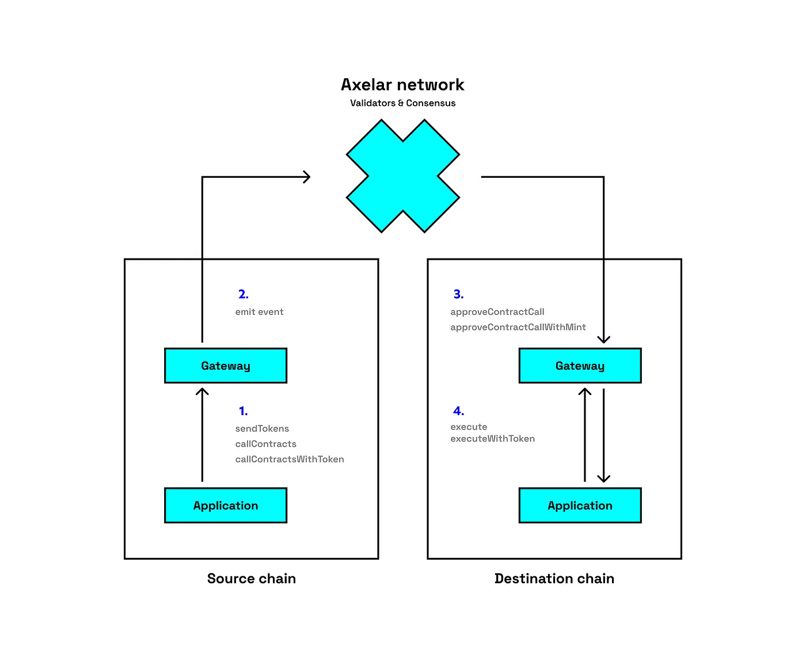
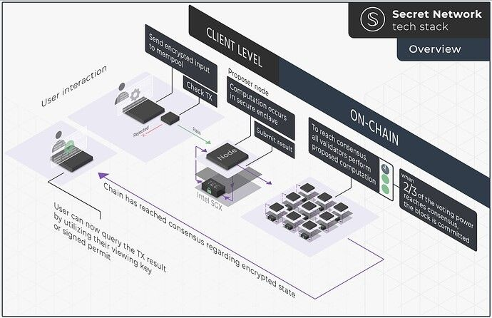

## Unconference Unlearn from Blockchain futurist conference '23 --- ## Aug 15 Schedule ``` * [satoshi] Advanced Financial Instruments in Crypto Presented by Unicoin Inc. : 9:30 - 9:45 * [Nakamoto] Bounty Workshop by Ethereum Attestation Service: Unlocking Web3: The Power of Attestations : 9:40 - 10:00 * [purple] Blockchain bootcamp : 10:00 - 11:30 * Bounty Workshop by Base: Building on Base: Introduction and Bounty Q&A : 10:00 - 10:20 * [purple] Blockchain Bootcamp: Intro to Crypto : 10:05 - 10:15 * [purple] Crypto101 by Cryptoducation : 10:15 - 10:25 * [Satoshi] WONDERFI PANEL: Consolidation & Diversification: How Canadian firms can stay ahead in 2023 : 10:30 - 11:00 * [satoshi] Presentation by Sascha and Kohji from Parallel : 11:30 - 11:55 * [poolside] Growing Crypto StartUps: Roundtable by Poolside : 12:00-1:30 * [satoshi] DEFI PANEL: DeFi and the Future of Financial Services: Disrupting Traditional Finance and Creating New Opportunities : 12:10-12:40 * [satoshi] break : 12:40-1:30 * [nakamoto] Bounty Workshop by Foundance: Let your hackathon project live longer : 12:50-13:00 * [nakamoto,purple] STRATOS BUILDER HOUSE : 13:00-15:30 * [poolside] Unconference by the Poolside : 13:00-15:30 * [satoshi] REGULATION PANEL: Crossing Borders: The Challenges and Opportunities of Global Blockchain Regulation and Compliance : 13:30-14:00 * [satoshi] DEAR HUMANITY: An Insider's Perspective : 14:10-14:15 * [satoshi] Regulation and Beyond - Looking forward (with hope?) presented by Localcoin : 14:15-14:30 * [purple] Computing Science Meets Economics on Ethereum: In Memory of Nobel Prize Laureates in Economics and Turing Award Winner Herbert Simon : 15:50-16:05 * [satoshi] Whose money is it anyway? Collaborative Finance and the Future of Money presented by Cosmos and Informal Systems : 16:00-16:20 * [satoshi] Bitcoin Mining Shipping Containers are Dead presented by Digital Shovel : 16:35-16:50 * [satoshi] PANEL: Digging Deeper: Insights into the World of Cryptocurrency Mining : 16:50-17:20 * [satoshi] APX Lending Announcement : 17:35-17:40 * [satoshi] FIRESIDE CHAT: Crypto Regulation for Dummies: Government Legislation and Global Adoption with Ben Armstrong & J.D. Seraphine : 17:40-18:00 * [Nakamoto] Bounty Workshop Presentation by MetisDAO Foundation: The Next Metis EcoNode : 10:20 - 10:40 * [satoshi] INFRASTRUCTURE PANEL: Web3 Infrastructure: Building the Foundation for the Future of the Internet : 11:00-11:30 * [purple] Cypherpunk Beginnings and the Case for Proof of Work : 10:35 - 10:45 * [purple] Understanding UTXOs for Beginners : 10:25 - 10:35 * [purple] Technical Workshop by ZKM: Exploring Zero-Knowledge-Based Virtual Machines : 16:30-16:50 * [satoshi] EVM is the Ecosystem Presented by XDC Foundation : 16:20-16:35 * [nakamoto] DEVELOPER PANEL: From Code to Revolution: How Engineers Are Catalyzing the Transformation of Industries with Web3 : 16:20-16:50 * [purple] PANEL: Harnessing the Power of zk with the Women of Aleo: 16:05-16:30 * [nakamoto] DAO PANEL: The Rise of DAOs: A Paradigm Shift in Governance and Decision Making : 15:55 - 16:20 * [purple] EthStorage - Scaling Ethereum Storage via Layer 2 and Data Availability : 15:35-15:50 * [satoshi] If You Can't Beat Ethereum, Join Ethereum! Presented by MetisDAO Foundation : 14:50-15:05 * [satoshi] How To Scale a Business in a Bear Market presented by Luna PR : 14:40-14:50 * [satoshi] Unleashing the Power of Ethereum: Why Enterprises Are Embracing Ethereum for Business presented by Hyperledger : 14:30-14:40 * [nakamoto] XDC PANEL: Vibrant Ecosystems and the Network Effect That Got Them There : 14:15-14:40 * [satoshi] The Future of Tokenization: Smart Tokens presented by Coreum : 14:00-14:10 * [nakamoto] Bounty Workshop by AI Arena: Game the Chain: Redefine Gaming with AI Arena : 14:00-14:15 * [nakamoto] Workshop by FutureMoney Group: The Future of Work - DEPIN, creator economy, and more : 13:45-14:00 * [nakamoto] Workshop by zkPass: ZK approach to preserving privacy and identity verification : 13:30-13:45 * [nakamoto] Path of Mass Adoption: Easy to use blockchain tools Presented by Blockscope : 12:40-12:50 * [satoshi] Workshop by Figment: Safety Over Liveness: The Staking Awakening : 12:20-12:40 * [nakamoto] Bounty Workshop by Axelar: Unleashing the Power of Secure Interchain Interoperability : 12:00-12:20 * [satoshi] FIRESIDE CHAT: Moving the Needle on Canadian Crypto Policy: The Role of Policymakers and Industry in Overcoming Partisanship in Canada with the Hon. Michelle Rempel Garner, P.C. and Morva Rohani : 11:55 - 12:10 * [nakamoto] Workshop by Dappd LLC: The Future is On-Chain: How can blockchain scale businesses? : 11:40 - 12:00 * [purple] Blockchain Basics + Trivia: Learn from Experts and Prove Your Knowledge : 11:30 - 12:00 * [purple] Bootcamp Panel: DeFi Toronto: Why decentralization, privacy, and scaling matter more than ever : 11:05 - 11:30 * [nakamoto] Bounty Workshop by Starkware: What would you build on Starknet? : 11:00 - 11:20 * [nakamoto] Bounty Workshop by XDC Foundation: The Network of Possibilities : 11:20 - 11:40 ``` --- ## Aug 16 Schedule ``` * [purple] INTERACTIVE WORKSHOP: Digital Forests for Kids: Using Blockchain to Protect our Planet : 9:00 - 9:40 * [nakamoto] Introduction from CryptoChicks & CryptoChicks Academy : 9:20-9:25 * [purple] Blockchain and Cryptocurrency 101 for Kids presented by CryptoChicks : 9:40-10:00 * [satoshi] SOCIAL GOOD PANEL: Web3 for Social Good: How Decentralized Systems Can Empower Marginalized Communities and Drive Positive Change : 11:20-11:50 * [purple] Seminar by Invest Hong Kong : "Hong Kong Web3 - Vision & Business Opportunities" : 11:30-12:00 * [satoshi] The Aleo Advantage presented by Aleo : 13:15-13:30 * [satoshi] FIRESIDE CHAT: Coinbase Canada: The Next Go Deep Market : 13:20-13:55 * [satoshi] NFT PANEL: Beyond the Hype: NFTs and the Future of Digital Ownership : 13:55-14:25 * [satoshi] Crypto Meets The Real World: How RWA's and Asset Management Will Shape The Future Of Investing Presented by VirgoCX : 14:25-14:40 * [satoshi] The Convergence of AI and Web3: A Network to Empower Humanity presented by Raiinmaker : 14:40-14:55 * [nakamoto] ETHWomen Bounty Workshop by CryptoChicks: Learn about CryptoChicks Bounties : 15:00-15:20 * [satoshi] ARTIFICIAL INTELLIGENCE PANEL: Intersecting Frontiers: The AI-Web3 Nexus and Its Game-Changing Implication : 15:40-16:10 * [satoshi] FIRESIDE CHAT: From Start-up to Success: Lessons Learned from Entrepreneur Visionary Michele Romanow : 16:25-16:50 * [satoshi] Keynote Presentation: Governance: Building more inclusive models presented by Charles Hoskinson, Founder of IO Global : 17:05-17:35 * [satoshi] Seed Phrases are Killing Crypto Presented by Giddy : 16:10-16:25 * [satoshi] STAKING PANEL: The Future of Staking: Unlocking the Power of Proof-of-Stake : 14:55-15:25 * [nakamoto] ETHWomen Bounty Workshop by OpenZeppelin: Shifting The Security Mindset: Why It’s Not Enough to Only Think Web3 : 14:40-15:00 * [nakamoto] ETHWomen Bounty Workshop by Audius: How to Build a Music DApp with Audius : 14:20-14:40 * [nakamoto] ETHWomen Bounty Workshop by Aleo: Aleo ZK Builder Incentives : 14:00-14:20 * [nakamoto] ETHWomen Bounty Workshop by Ava Labs: Build your own EVM-powered chain on an Avalanche's Subnet : 13:40-14:00 * [nakamoto] ETHWomen Bounty Workshop by SCRT and FHENIX: Learn how to obtain confidentiality in a smart contracts : 13:20-13:40 * [nakamoto] Workshop by dappOS: The Operating Protocol for dApps : 13:00-13:20 * [satoshi] TRADFI PANEL: Blockchain Disrupting Traditional Finance: The Collision of Two Worlds : 12:40-13:15 * [purple] Anatomy of a DeFi Exploit : 12:00-12:15 * [satoshi] How A Web3 Game Could Train the AI of the Future presented by Matador Gold Technologies : 11:05-11:20 * [satoshi] REGULATION PANEL: Blockchain Regulation in Canada: Balancing Innovation, Compliance, and Consumer Protection : 10:35-11:05 * [satoshi] Public Relations and Web3 Technologies presented by CCW : 10:30-10:35 * [satoshi] Cryptocurrency Puberty presented by CryptoCurrency Certification Consortium (C4) : 10:15-10:30 * [satoshi] Revolutionizing Crypto Payments presented by EukaPay : 10:10-10:15 * [purple] Blockchain and Cryptocurrency 101 for Youth presented by CryptoChicks : 10:00-11:00 * [satoshi] Owning Your Identity presented by RNS.ID : 9:55-10:10 * [nakamoto] PANEL: Navigating the Web3 Boys' Club: Women's Perspectives on Inclusion and Equity : 9:45-10:05 * [satoshi] A Showcase of Top Canadian Blockchain Community Builders : 9:35-9:55 * [nakamoto] PANEL: Collaborative Success in Web3: From Building Effective Teams to Finding Your Ideal Role : 9:25-9:45 ``` --- ## Themes * AI * Validator Staking as a service * Digital Identity * Gaming (decentralized randomness) * Zero Knowledge --- ## Cross chain * Alexar network --- ## Zero knowledge * Starknet --- ## Backgrounder * NEO, IOTA, TORN, Ethereum, EOS (Ethereum on Steroids) * WBTC relies on multi-sig for bridging * Decentralized way of multi-sig wallet * May axelar has a way to save from Bridge attacks - sky mavis * Article from chain-analysis : Vulnerabilites in cross-chain protocols emerge as top security risk --- ## Enter Alexar network  --- * Axelar connects other blockchains - Universal web3 interoperability * They have 75 validators * Used for general message passing * Explorer - [testnet.axelarscan.io](https://testnet.axelarscan.io) * Resources * [bit.ly/axelar-examples](https://github.com/axelarnetwork/axelar-examples) --- ## Enter Secret network * Confidentiality in Smart Contracts * Keep confidential data private * Leverage cross-chain privacy tooling through Privacy as a service --- ### Secret network tech stack  docs.scrt.network --- ## FHENIX * Scalable fully homomorphic encryption blockchain * EVM chain to enable confidential SC using fully homomorphic encryption * docs.fhenix.io * with full homomorphic encryption : * Encryption transaction inputs * encrypted state updates * encrypted storage * end to end encryption in web3 * fhEVM * existing contracts can run --- ## Use cases * On chain gaming - multiplayer roulette * private market for event tickets * DAO * Crowd source AI modules * Privacy preserving KYC * Dark pool for early investors' sale * Medical data privacy --- ### Avalanche : Build your own EVM-powered chain on subnet * Scalability * High demand - n/w saturation, high cost, high waiting times * fast finality, customizable, dedicated infra, security --- ### when to use subnet? * Custom blockchain - Own gas token, VM customization * High throughput - performance and cost predictability * Access control - institutional/regulated solutions, KYC/KYV --- ### build own subnet EVM 1. Genesis config - initial balance 2. Gas Config - gas token, base fee, gas limit, target consumption 3. Precompile - custom functionality modules. ex. cryptographic functions --- ### tools for deploying own blockchain * avalanche-cli * links * Avalanche Academy * Discord * Developers' twitter(aka X) * docs.avax.subnet --- ### ALEO Chain * new layer 1 blockchain * focused on privacy using ZK * LEO language (similar to typescript and rust) * no need to understand crypto/zk fundamentals * no need write zk circuits --- ### Use cases * Gaming - turn based games, table games * Identity and Authentication - KYC/AML, zkAUth * ZK DeFi - dark pools, dexes, stablecoins * ZK Machine learning (ZKML) - single/multi-layer neural n/w, zk anomaly / fraud detection * Voting and governance - private on-chain voting, private DAO infra --- ### Aleo is evolution of decentralized systems * developers, provers and validators * ZK Gaming is one of the application --- ## Audius * $42B industry; only 12% goes to artist * Decentralized music DApp --- ## Shifting Security Mindset * Crypto industry is a strong incentive for threat actors to target industry * full range of threat actors - script skiddies / , advances, groups, state funded * Spending on attacks is justified by reward - 0 day vulnerability on dark market. * investing time and efforts --- ### Enter Blockscope * Data monitoring tools * https://www.blockscope.co/ --- ### Enter dappd llC * Asset tokenization * What do businesses care about? * Increase profit, decrease expense, liability reduction, building trust * How to increase profit * tokenization of assets : increasing liquidity of illiquid assets * exposure to new markets : immediate availability of global community --- * Removing liability * Custodial vs non-custodial - who owns your data? * zk knowledge - performing actions that don't require the oversight knowledge of platform --- * Real estate onchain * deed verification * REIT (real estate investment trust) * develop and manage digital twins of real estate * transparent profit sharing * no intermdiaries * fractionalization of tokjenization for business * Operational efficiency, reduction in fraud, fractionalization, flexibility, reduced settlement time, reduction in fraud. --- * Healthcare * Patient ownership of medical records - patient controlled authorization to view records, transparency and immutability of information * inventory and tracking of medical supplies * streamlining billing and invoicing --- ## Liquid (being developed by dappd llC) * Liquid buys, owns and operates high performing real world assets browse marketplace * backed security (ABS) * Earn Yield * Exit Assist --- ## What is DeFi * offer financial instruments w/o relying on intermediaries such as brokerage, exchanges, or bank using SC contracts on blockchain * Curve Finance Exploit * re-entrancy lock bug in vyper * an mev bot was able to save some fund by front running MEV * TCAE x Chainalysis Program --- ## Foundance * foundance.org * Mother company - soonami.io * social network for founders and bootstrap ventures * Speaker - Christian Sauer - CEO: soonami.io * Remote virtual accerelator * basically it will help name your project, logo, on pager, --- ## Dynamic Equity * offer tokenized agreement * IP agreement included * Decide * initial captable * remuneration of time invested --- ## who will support the project? * get experienced advisors? * help with crucial documents * are people available to help with legal stuff, dev or marketing? --- ## virtual co-founder * write business plan * write pitch deck --- ## no funding insight * they need to become a remote "y-combinator" * is there a single investor interested in project * what we need to get funded? * soonami invests in AI and web3 --- ## Figment.io - Safety Over Liveness * Explain challenges the staking at scale. * They have solutions to scale --- ## What is staking? * You, me anyone can participate in the network to do the work. * Blockchain cannot work if new blocks are not added * Token holders earn rewards by staking digital assets in PoS blockchain * Aligns interests of token holders and network operators. Token holders run, maintain and benefit from network * Required - Lockup tokens in the chain. like a security deposit for the job.Like you might have to gave 5x-10x your salary to your boss. if you lied, cheat, still, that security deposit is de-funded. if you do your job, the security will come with you. * Nodes vote on block to add block to the chain --- ### Staking is not * lending liquidity, provisioning or any other DeFi activity --- ## Ethereum node and validator background * Execution Client * can service many clients * Consensus Client * Validator Client --- ### Cryptographic keys * Real world - Keys lock/unlock car, house etc; Signatures sign documents, DNA/Biometric establish --- ## Staking rewards and penalties * Rewards - proposing new blocks, attesting new blocks * Penalties - Being offline, attesting to invalid/contradicting blocks * Slashing - incorrect signing of blocks in same slot, creating contradictory forks, double signing indetical keys running on 2 different validators simultaneously --- ### Slashing * malicious actors * over engineering infrastructure solutions * mistaked made when migrating validator clients * implementation --- ## staking at scale * design infrastructure, tooling * secure, safe, scalable and speed * secure - key security * safe - slashing protection, penalty precautions * scalable - automate key generation --- ## solutions * remote signer has access to private keys * fleet of validator clients * have ways to spin up validator deterministically * Shamir's secret may be in secure vault? --- ## anti-slashing - EIP 3076 * used for migrating from lighthouse to teku --- ## key creation * get the image --- ### Figment * $3B+ assets staked * 5% is staked on figment validators * 250 institutional clients --- ### Enter XDC * XDC is EVM compatible entreprise grade network * Supports ISO 20022 messaging standards. * IS0 20022- universal standard for high, or large value systems like SWIFT * 2000 TPS * It has AML KYC verified * Web - xcd.org --- * 2 second transaction finalization, near zero gas fees, * Both public/private network capability * micro-transactions - XDPoS near zero gas fees, agnostic to data packets size * forensic monitoring --- * Capabilitites - Asset tokenization, custodial sol, crosschain bridges, payment trade financing * Part of TFD initiative and Trade TEQ * Apps built on XDC - Fathom and Impel * Fathom is a Defi soln, has its own stablecoin --- ## XDC links * XDC Network official docs - https:/docs.dc.community * XDC Main & Test Networks details - https://docs.xdc.community/get-details/networks * Dev Tutorials & How-to Build on XDC - https://docs.xdc.community/learn/how-to-articles * Dev Tools - https://docs.xdc.community/tools * Discord - https://discord.com/invite/MFeHJ6C5gn * Dev Forum - httos://www.xdc.dev/ --- ## Enter Shibarium * decentralized metaverse. * can talk about 11 hubs, programming and AI/Blockchain tools * shibthemetaverse.io * 11 hubs * ryoshi plaz, etc --- * gaming, metaverse for business and digital land & building, * social experiences, virtual concerts and digital fashion * Quality of web3 gameplay matters * too many web3 games have very few players actually in game, * number of wallets isn't realnindicator of success * Focus on fair free to play game * Comparable to best battle card games * "focus on matching playability of best in market" --- * Web3 Game monetization * Game items, esports - torunaments, play and earn, A game of Skill - Gambling * Gambling * Cost , consideration and randomness * shibarium will offer low fees for every service (explore more) --- * Shibarium PoS chain advantage - speed of transactions, use side chains for transaction processing * Buit for - upgradability, netwrok, engagement, data,decentralization, privacy, efficiency, interobality, regulations. * Hackathon idea- healthcare, tooling, Defi Tools * shib.io --- ## Enter MetisDAO * Gave a talk on EcoNode so prepare some slides. --- ## Enter Starknet * fast, cheap and secure network * L1 scaling problem * once it proposes a new block - it gives validity proof * no need to re-execute the transaction, just validate the proof * Showed execution vs verification - Sequencer(n) to validators(logn^2) * [Refer Slides](https://docs.google.com/presentation/d/e/2PACX-1vRFtCDg-BRkuHL69h_09FnkiGD0flVd3cAK6C6mTOtfFjU5lGlhlHOrwnayUcgU0aXHXviEUjuNaf61/pub?start=false&loop=false&delayms=3000&slide=id.g255b334d991_0_1305) --- ## STARK vs SNARK --- * parameters : verification, proof size, proving time etc * TPS - 54.33 with milticall * Starkware has Powerful ZK language - Cairo --- * Cairo- provabale programs, computational integrity, verify w/o re-execution, turing complete, rust like syntax, strongly types and powerful complier, no need to know anything about zk ``` struct Rectanglr { <- custom data types height: u64, width: u64, <- scalar type } ``` --- * startnet has native account abstract * every single wallet implements AA decoupling of signer and Account * Multi ops in single tx * Custom logic to verufy tx * and more.. --- * Bundling user Ops * multicall on Starknet * Smart wallets aka Account Abstraction (protocol level) * Using AA, using turn your smartphone into a hardware wallet * Hardware signer - secp256r1 --- * Starknet has vibrant ecosystem * Dojo - collection of tools for full on-chain games aka autonomous world. Sozo(migration planner), Katana (local devnet) * Giza - On chain ML models, integrate existing models, deploy your own models * Beerus - starknet light net, turns a trusted RPC in to trustless. Uses helios for L1 information, small enough to be embeded, build with rust * herodotus - prove ownership of an L1 asset on L2 ala Storage proofs. A safer alternative to bridges, Any L1 asset at any block heoght * Kakarot - zk-EVM type 3 on top of Starknet. evm to cairoVM bytecode interpreter. Deploy solidity smart contracts to starknet w/o cairo rewrite.